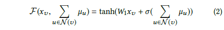
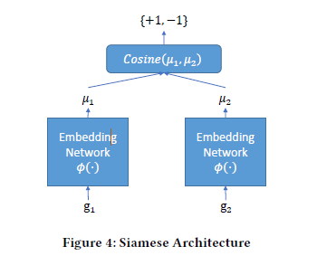
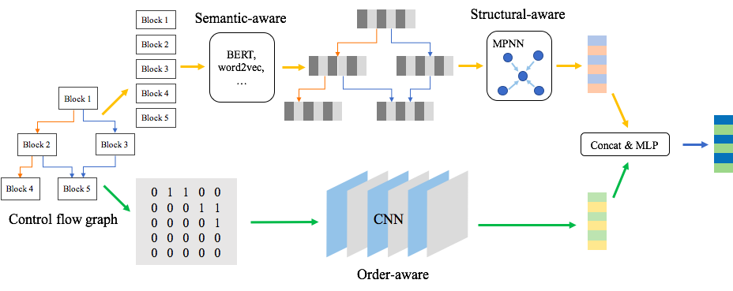

开篇
本文介绍了3篇二进制代码相似性分析的顶会技术，他们体现了二进制代码相似性分析中一些最先进的思想。第一篇是Genius技术，是在《基于神经网络图嵌入的跨平台二进制代码相似性检测》论文中作为对比技术介绍，它首次使用图嵌入这个机器学习的概念去做二进制代码相似性分析，它涉及到了聚类算法、图比对、密码本等技术，也为后两篇论文打下了基础；第二篇是Gemini技术，它使用了更先进的Structure2vec算法计算图嵌入，并融合Siamese网络和神经网络；第三篇是腾讯科恩实验室最近的顶会技术，它以Gemini的思路作为基础，使用了更多的自然言语处理和深度学习算法去训练程序控制流图中基本块语义信息、结构信息、顺序信息。
开篇之后的白话
最近，科恩实验室顶会《基于语义感知的神经网络的二进制代码相似度检测》让我眼前一亮。因为当时我也正尝试在二进制代码分析中引入机器学习，正在试用的是随机森林和adaboost算法（相较之下太low了），打算用它们做一个独立于IDA的func_split，用来识别二进制代码的函数。然后，就去看了一下这个论文，看上去很高大上。但郁闷的是，对提到的二进制相关知识都很熟悉，但对算法应用的原因和意义都很懵逼。就这样，深度学习在二进制分析上的应用让我产生了极大兴趣，我决定好好研究下。但是这个论文用的机器学习算法太多了，而且工作是基于另一篇论文的基础，为了搞懂这个论文，我决定先去读它的基线论文 《基于神经网络图嵌入的跨平台二进制代码相似性检测》，然后再来看看科恩顶会的创新和精妙之处 。
基于神经网络图嵌入的跨平台二进制代码相似性检测
从论文标题说起
- 图嵌入
先解释一个最重要的术语“图嵌入”，图嵌入的目的是降维，在保留图特征的前提下将图经过非线性变换成一维向量。相较于以前通过比对两个二进制函数的CFG图（函数的控制流程图）的相似性去判断代码相似性（图比对），现在提取CFG图嵌入后对向量做相似性比较，其时间代价是不是更小，而且特征更为抽象。
但是，利用CFG图嵌入做二进制代码的相似性检测，前人已经做过了(Genius)，而且Genius在对CFG做嵌入之前，将CFG转换为ACFG，即提取控制流程图中平台无关的基本块属性和块间属性。Genius使用二部图匹配算法和密码本作为基础去计算ACFG的嵌入，具体做法是使用聚类算法训练出一个具有代表性的ACFG的特征向量集合，形成一个ACFG与特征向量对应的密码本，对于新的待计算ACFG，通过二部图匹配算法与码本中每个代表性的ACFG进行相似性比对，新ACFG的嵌入即为与其最相似的代表性ACFG的特征向量。Genius的图嵌入生成方法时间代价较高，而且码本质量取决于训练数据规模。
Gemini（论文实现的原型）采用Structure2vec算法计算ACFG的图嵌入，该算法从空间结构的相似性去定义相似度，通过评价函数整合节点和它n层邻居的信息，将这些信息压缩成一个有限维的非线性向量。原产的Structure2vec算法并不能直接用于计算ACFG图嵌入，Gemini使用了其变种，首先对ACFG每个节点使用变种的Structure2vec算法压缩基本块属性和图结构信息到一个特征向量中，然后使用聚合函数将所有节点的特征向量聚合成一个向量。听起来不错吧，它可以整合CFG中基本块信息和基本块间的结构信息，并把它们映射成一个非线性向量的表示形式。 注：Structure2vec论文是2017年发表，Genius论文是2016年发表，也不怪Genius没考虑到用Structure2vec算法去计算ACFG图嵌入。 加入神经网络的图嵌入
到这里，Gemini做二进制代码的相似性分析基础架构都有了（即基于Structure2vec算法生成2个二进制函数的ACFG图嵌入，然后通过比较2个嵌入向量的相似性），神经网络有什么用？这时，神经网络算法就该出场了，给它安排的活是训练Structure2vec算法的参数，这时候有公式可能更直观些。

如公式2所示，这是Gemini选定用来在Structure2vec模型中做非线性映射的模型，这个非线性映射的输入xv是节点的基本块属性信息，u∈N(v)是节点的邻接节点信息，经过映射可得到一个节点的特征向量，而整个ACFG特征向量是通过所有节点聚合得来。其中，σ（·）是一个非线性变化， Gemini为了使非线性变化较为强大，就把σ（·）设计成n层全连接神经网络；W1是一个d*p矩阵，d是xv（基本块属性）的长度，p是生成的嵌入长度，W1也是待训练参数。
目前，总结来说就是，基础是Structure2vec模型中加入神经网络来训练其非线性变化的模型，再用聚合函数将ACFG节点的特征向量聚合成ACFG的图嵌入，结合神经网络的图嵌入最终输出的依然是ACFG图嵌入（也可以称为ACFG的特征向量）。Siamese网络
在前面已经介绍过本文采用的二进制代码相似比对的方式就是比较图嵌入，那么图嵌入计算出来后，如何处理可以得到相似度的结果，答案就是Siamese网络，其模型特点是在样本量少的情况下识别类型.

如上图所示，Siamese模型本身包括了目标降维模块，正好上文的融入神经网络的图嵌入即可作为模型中的降维模块。整体模型的输入是两个待比较二进制函数的ACFG，经过嵌入网络得到降维的特征向量u1和u2，然后计算二者余弦距离，通过阈值判定结果是-1（非相似），还是1（相似）。当然，训练过程都有真实的标签，以便整个模型不断调整参数。- 跨平台
跨平台指的是什么呢？即，二进制代码相似性比较与二进制代码所处平台、使用的编译器和优化选项无关，训练出的ACFG图嵌入计算模型和使用的相似比对方法与以上条件无关。
又是如何做的呢？总结起来有两点工作：- 继承了Genius提取二进制函数CFG中与平台无关性的属性，6个基本块属性：字符串常量、数字常量，传递指令数量，调用指令数量，运算指令数量，指令总数量；1个基本块间属性：基本块子代数量。需要注意的是，Gemini抛弃了Genius中使用的另一个基本块间属性“介数中心性”（betweenness），原因是该属性提取较慢，与模型的最终效果影响也不大。
- 训练数据采集的平台无关性，Gemini使用同一份源码在不同系统平台、不同编译器、不同编译器优化选项的条件下生成大量带标签的样本。另外有一个样本处理的细节是不会将同一份源码编译后的二进制代码分开在训练集、验证集和测试集。个人认为这样做有助于在训练模型的过程中充分考虑到编译的不同条件，以训练出平台无关性模型。在测试时，也可以用其它源码生成的样本来验证未经训练的数据是否符合模型。
- 总结标题
在介绍了论文中的图嵌入、神经网络、跨平台的概念及论文中的应用，那论文整体的思路也都明确了。总结下标题，目标是做跨平台二进制代码的相似性检查，方法是加入神经网络的图嵌入。对论文的思考
- 对于二进制代码，它的变化并不是无穷无尽的，因为它的产生是来源于机器规则，它看起来复杂难懂，但其内部必然藏着巨大的规律性，而深度学习的优势就在于挖掘这种潜在的规律，我目前认为“深度学习是只要你有，我就一定能挖出来”。至于怎么挖，用什么样的算法和模型，这需要人去建立二进制数据和模型的联系和关系，这篇论文是一个很好的结合，我相信未来，在这个方向上的继往开来者会很多。
- 对于ACFG中的属性，不同平台、编译器、优化选项生成的二进制代码，有些属性值（运算指令、call指令、指令总数，甚至常量值等）存在噪声，它的成分并不是全部用来体现函数本身，有些仅是某个平台和编译器或优化选项特有的，例如一些安全机制，栈随机值保护、栈指针验证、异常处理等，在不同平台和优化选项中，这些可能出现，也可能不出现。训练模型时需要考虑这些，在模型真正用于实际时也需要考虑这些。
- 论文写的非常好，从引言到原理阐述，其他方法的对比，对模型中特殊情况的考虑（例如超参问题），还有深度挖掘了这个项目的主线之外的价值点（例如再训练问题），并做了相关的实验。值得经常翻看，所以认真的把它翻译成了中文，包括人家的答谢，英文水平有限，还望有看到的见谅。
注：论文翻译可在博客的历史文章中找到基于语义感知的神经网络的二进制代码相似度检测
现在来看看科恩的论文，着重说说它与Gemini的不同之处吧。
Semantic-aware 模块：BERT算法训练基本块语义与结构信息
Gemini沿用了它的基线论文Genius提取CFG属性后（即ACFG）做图嵌入,该篇论文认为这将损失大量的语义信息，故而在形成类似Gemini中ACFG的过程前，引入了NLP（自然语言处理），即使用BERT算法对每个基本块序列进行训练，语义训练模型包含4个子任务，期望训练出的模型包含以下4个维度的信息：- Block的代码语义；
- Block的邻接信息；
- Block是否属于CFG；
- Block所属平台、编译器、及哪个优化选项。
语义提取模型最终输出类似于Genius和Gemini的ACFG图，区别是该部分使用机器学习替代了人工提取（使用IDA脚本），而且包含基本块属性额外的信息， 输出的基本块特征向量由机器学习得到。
MPNN算法计算“ACFG”的图嵌入
MPNN（消息传递网络）是由Google科学家提出的一种模型，它本质上还是利用卷积神经网络学习图结构信息，只是形式框架上较为新颖，它通过收到邻居的消息来更新自己的状态，所以叫作消息传递网络。（目前还没有对卷积神经网络和MPNN进行细致学习，能理解的就是这么多，可能有不准确的地方）。不过，简单的理解，该模型的作用可以类比Gemini的Structure2vec模型，他们的输入都是CFG图（其中基本块属性被量化成有限维特征向量），输出都是图嵌入， 但这个图嵌入不是最终的图嵌入，它还要融入节点顺序模型的训练成果。
CNN算法训练节点顺序的特征
使用CNN（卷积神经网络）对CFG中节点相应顺序或者说布局进行训练也是该论文的一个重要创新部分。由于前面已经包含了基本块的属性信息和CFG整体结构信息，这个模型就专注于训练CFG的节点顺序信息。具体做法是，先把CFG节点布局抽象成01矩阵，然后对矩阵做卷积神经网络，学习CFG节点顺序相关特征，最后输出是一个特征向量。
模型融合
该篇论文使用了三个模型从不同角度去训练二进制代码CFG中的信息，其中语义感知模型和结构感知模型是串联的，顺序模型可以与前面两个并连，最后使用MLP（多层神经网络）将两条线上输出的特征向量映射为一个特征向量。 融入三种模型后输出的这个特征向量才是和Gemini中基于神经网络的Structure2vec模型训练出的特征向量是类似地位。
对论文的思考
- 科恩的论文对二进制本身特性考虑的更多，例如我在前边论文思考中提到的平台、编译器、优化选项产生的噪声，他们在语义感知模型中加入了训练Block属于某个平台、编译器和优化选项这个信息，不确定是否能消除这个噪声，但至少考虑到了；CFG还有一个很重要的信息，即节点的有向传播（ 基本块间的跳转是有向的，不能逆代码流程方向传播），论文中的顺序感知模型也许正好可以弥补这个方面的信息。
- 整个提取图嵌入的流程在3个地方用了神经网络算法，1个地方用了NLP算法，而且训练无法并行，也不是端到端， 最长的链路为BERT -> MPNN -> MPL，这个也许会在实用性上面打些折扣，不知道是否可以做些合适的取舍或训练算法融合呢？
感悟
在漏洞挖掘领域中，当一门新技术、一个新工具、一些新代码出现时，厉害的人往往可以收获一大批CVE，靠的是日益累积的技术能力和漏洞挖掘领域中敏锐的嗅觉。我看顶级研究也是靠这两样，以2016年Genius论文为基础，它使用了图比对和密码本去计算CFG图嵌入。到2017年Structure2vec论文出现时，Gemini能第一个想到用Structure2vec算法去替代图比对和密码本。BERT和MPNN也是2017年以后才出现的，科恩的论文能想到它们适应于解决ACFG人工生成问题和图嵌入计算的问题。 一个有前途的基础研究出来后，必定是遍地开花的结果，不过果实是留给准备充分的人！
参考
- Neural Network-based Graph Embedding for Cross-Platform
- Semantic-Aware Neu for Binary Code Similarity Detection
作者声明
本文版权归作者(rohex)所有，旨在技术交流使用。未经作者同意禁止转载，转载后需在文章页面明显位置给出原文连接，否则相关责任自行承担。
This is copyright.